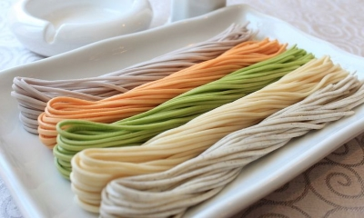
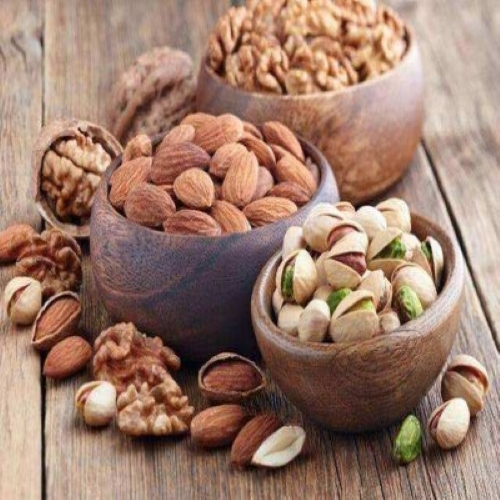

| 姓 名 |
韦 艳 春 |
照 片 |
| 班 级 |
通 信 1903 |
 |
| 学 号 |
201916180307 |
| 面对当前新型冠状病毒肺炎疫情防控的严峻形势，我们正面临一场严峻的考验，疫情当前，不论是奋战在一线的你，
还是自觉窝在家里不添乱的你，都要时刻做好个人防疫。疫情期间有许多美食冒出来，例如: |
压缩饼干:
压缩饼膨化时经高温高压灭菌清毒，适宜长期保管和运输，用塑料袋包装既卫生又方便，同时其质地紧密，食用后更易产生饱腹感。

| 面条： |
面条既可以饱腹，还含有丰富的蛋白质，能维持免疫机能，增强机体免疫力。 |
 |
南瓜：
南瓜可以做蔬菜、主食等等，它还有保护胃粘膜，促进胆汁分泌，免受粗糙食品刺激，加强胃肠蠕动，帮助食物消化等。
| 坚果： |
坚果是植物的精华部分，一般都营养丰富，含蛋白质、油脂、矿物质、维生素较高，对人体生长发育、增强体质、预防疾病有极好的功效。 |
 |